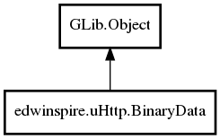

BinaryData
Object Hierarchy:

Description:
public class BinaryData : Object
This class represents binary data in uitn8[] with features that be converted to string
Namespace: edwinspire.uHttp
Package: libspire_uhttp
Content:
Properties:
- public
uint8[] data { set; get; }
Creation methods:
Methods: